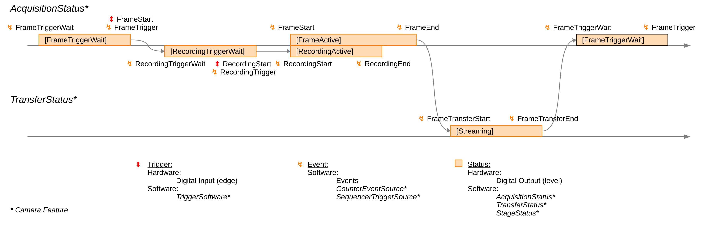
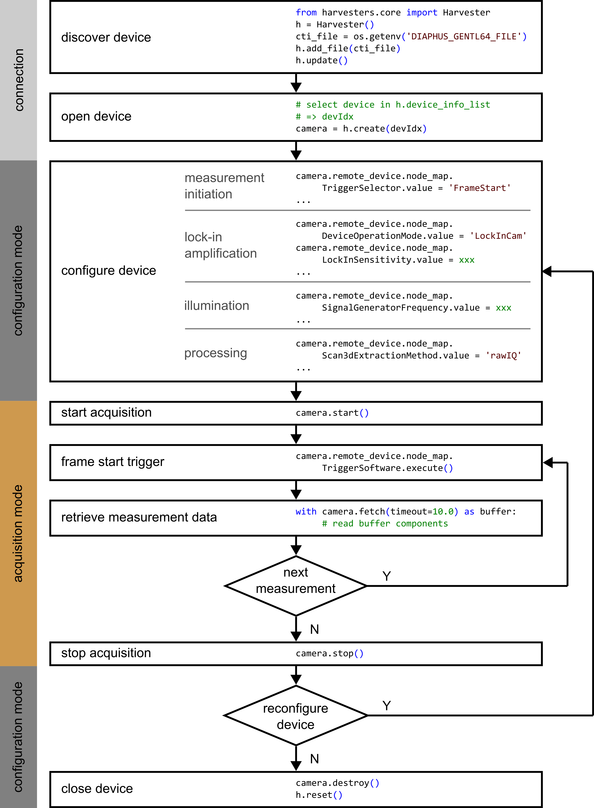

C) Basics of Application Software Development
Here, we briefly introduce the fundamental organizing principles behind software control of the heliCamTM C4.
These concepts and the associated terminology are heavily shaped by the Generic Interface for Cameras (GenICam) framework, to which the heliCamTM C4’s programming interface complies. Rather than explaining this standard in depth, the following section wants to present you with the fundamental notions required to adapt Heliotis provided example code in C4Utility according to your needs. For more complete information, the reader is referred to the Programmer’s Guide of the heliInspectTM H8 interferometer, whose software integration works on the same principles as that of the heliCamTM C4.
Implementation details differ depending on the software integration option you choose. Specific versions of the Programmer’s Guide of the heliInspectTM H8 and code examples for different programming languages are available. To avoid a purely abstract discussion, we give examples in Python syntax in the style of a camera interaction through the “Harvesters” package. Thus, the code is directly comparable with the lock-in camera specific usage examples “c4DemodSimple.py” and “c4DemodAdvanced.ipynb” (C: > Program Files > C4Utility > examples).
Feature
The heliCamTM C4’s application user interface (API) defines
special software variables used for reading and writing operation modes and
lock-in camera parameters. They are referred to as features. In the
starter experiment, you have already encountered some, such as the
SignalGeneratorAmplitude or the LockInTargetReferenceFrequency,
albeit they were plainly called Amplitude and Offset.
API Description
If C4Utility is installed, you can find a complete list of all currently
available lock-in camera features and their properties (C: > Program
Files > C4Utility > doc). Table 8 illustrates how features are described
using the example of the feature LockInSensitivity.
|
Specifies the sensitivity range of 0.0 – 1.0.
The highest sensitivity setting 1.0 maximizes the signal amplitude.
LockInSensitivity is an alias of the feature ExposureRatio.
|
This example also reveals some generic elements of features and their description.
Features are typed like other programming variables (see Table 9).
Table 9 Data Types of Features Data Type
Description
Boolean
Boolean value (True or False)
Command
Executable command
Enumeration
Discrete value list
Float
Floating point number
Integer
Integer number
String
Character string
Visibility is a GenICam concept. Useful for application software developers, it specifies at what approximate level of expertise camera users should be exposed a certain feature, given its complexity, see Table 10.
Table 10 Visibility Levels of Features Visibility
Description
Beginner
Feature can be used easily.
Expert
Feature requires in-depth knowledge of the device or transport technology.
Guru
Features requires exact knowledge about that specific device or transport technology.
The description moreover reveals if one has the authorization to access and modify a feature (see Table 11).
Table 11 Accessibility Levels of Features Accessibility
Abbreviation
Description
Read Only
RO
Status information only or currently not write-able because of the device state
Write Only
WO
Written feature (command)
Read and Write
RW
Full access (writing changes state or an attribute of the device)
Not Available
NA
Temporary not available
Not Implemented
NI
Not implemented on this device or not active
Operating the device in a different mode can change the accessibility of a feature. The camera device type can be changed by the feature
DeviceOperationMode.Important
The heliCamTM C4 shares the same configuration interface with other Heliotis devices.
\(\Rightarrow\) Always use the heliCamTM C4 specific setting
DeviceOperationMode = 'LockInCam'.The scope of valid entries is also indicated, and a short text portrays the feature in words.
Access
Which features are available and how they need to be configured is the same in all development environments which are supported. The syntax to access the features varies among the different languages available, however, and is shown in sample scripts (C: > Program Files > C4Utility > examples).
With the Python library “Harvesters”, you configure the
heliCamTM C4 by interacting with a camera object, which is
simply called camera in the examples. A feature’s value is accessed by
prepending camera.remote_device.node_map. to the feature name and
appending .value.
Writing
Setting the LockInSensitivity feature to its maximum 1.0 can thus be
achieved with the following line.
camera.remote_device.node_map.LockInSensitivity.value = 1.0
Reading
Similarly, reading back the camera configuration for the same parameter
(and storing it in a float variable called sensitivity) is done as
follows.
sensitivity = camera.remote_device.node_map.LockInSensitivity.value
Special Feature Types
Some special features are not as directly accessible as the previous
example LockInSensitivity.
Selector
One such feature category is under the control of specific integer and enumeration features called selectors. These selectors enable indexed access to other features. What this means is best illustrated with an example.
The feature TriggerSelector determines which of multiple triggers
(e.g, 'FrameStart', 'RecordingStart', or 'Reference' – see Table 12) is
configured. Features under the control of this selector, such as
TriggerSource, change their behavior according to the value of the
selector. TriggerSource, for instance, controls which input channel is
used for the selected trigger. To choose the input pin 'FI2' for the
'Recording Start' trigger, for instance, one would write:
camera.remote_device.node_map.TriggerSelector.value = 'RecordingStart'
camera.remote_device.node_map.TriggerSource.value = 'FI2'
In the feature description document, the selector features include a list with all possible selection options. Selector-controlled features have the corresponding selector printed in square brackets after their name.
|
|
||||||||||||||||||||||||
Target and Actual
There are lock-in camera parameters which can only assume discrete
values in their range of validity. The LockInReferenceFrequency feature,
for example, can only take values that are a fraction of the sensor’s clock
frequency. In this case, the parameter is covered by two separate
features (see Table 13). The user sets a “target” feature, from which the
closest possible parameter value is deduced automatically and stored in
the feature reflecting the “actual” setting. The actual value cannot be
written directly but is readable.
|
|
||||||||||||||||||||||||||||
Status, Trigger and Event
The camera goes through a sequence of states during a measurement (see Fig. 25), more than one of which can be active at the same time. Changes of state require an internal – often software-controlled – or an external trigger signal (cf. paragraph on the temporal sequence of the sensor operation). Following a change of state, software events may be sent or recorded.
Monitoring and Control of Measurement Sequence
Let us consider the initiation of a measurement to illustrate what this means in practice.
During acquisition, the heliCamTM C4 is initially in a state where it waits for the
'FrameStart'trigger, the first signal required to start a measurement.Upon arrival of this trigger, the lock-in camera enters another state in which it waits for the
'RecordingStart'trigger.Only when it receives this second trigger, does it get into a third state, one of active recording.
Note
There is currently no option to acquire individual frames. In each
measurement, an entire burst of frames is recorded. Note that both
the 'FrameStart' and the 'RecordingStart' trigger, are thus only needed
once per measurement to induce its beginning.
{kind=link}

Fig. 25 Status and Event Signaling during Measurement Sequence
Trigger Configuration
As you have seen in a previous example, these triggers are configured
via selector features. For further illustration, let us assume more
specifically that we wish to start a new measurement with a software
command, camera.remote_device.node_map.TriggerSoftware.execute(). In
this case, we specify that the 'FrameStart' trigger should come
internally from 'Software' and set the 'RecordingStart' trigger to
'Off'. By switching it off, 'RecordingStart' is triggered
automatically after a “FrameTrigger” event.
These settings can be achieved with the following code sniplet.
camera.remote_device.node_map.TriggerSelector.value = 'FrameStart'
camera.remote_device.node_map.TriggerMode.value = 'On'
camera.remote_device.node_map.TriggerSource.value = 'Software'
camera.remote_device.node_map.TriggerSelector.value = 'RecordingStart'
camera.remote_device.node_map.TriggerMode.value = 'Off'
Note
The 'RecordingStart' trigger goes directly to the image sensor. To
start a measurement with an external synchronization signal via the
heliDriverTM D3’s communication interface, you thus usually
employ this trigger. To do so, enable it and set the TriggerSource
feature to the relevant input pin. Note also that the 'FrameStart'
signal cannot come from an external source.
Status Output
You may also wish to monitor the status of your camera with an
oscilloscope. To route a status signal, such as 'RecordingActive', in
real time to a heliDriverTM D3 output pin, e.g., 'RTIO2', you
may use the selector LineSelecter and the feature LineSource
depending on it.
camera.remote_device.node_map.LineSelector.value = 'RTIO2'
camera.remote_device.node_map.LineSource.value = 'RecordingActive'
For currently available status, trigger and event monitoring/control, see chapters 1, 6, and 8 of the device feature description document (C: > ProgramFiles > C4Utility > doc > ftrDesc.pdf). Status signals from the camera are delayed by ~ 1 μs.
Retrieving Measurement Data
After a measurement, we would like to retrieve the data. This is not done via heliCamTM C4 features. Measurement data are transferred as multi-part buffers. Consult the code examples (C: > ProgramFiles > C4Utility > example > Python) to learn how they are retrieved.
Basic Sequence of Operations
Application programs to operate the heliCamTM C4 should follow the sequence shown below. When developing camera software, we recommend you start with a Heliotis code example and adapt it while preserving the following structure.
{kind=link}

Fig. 26 Basic Sequence of Operations
Note
Only in “configuration mode” can the heliCamTM C4’s settings be altered. Once the acquisition has started, this is no longer possible until it is stopped again.